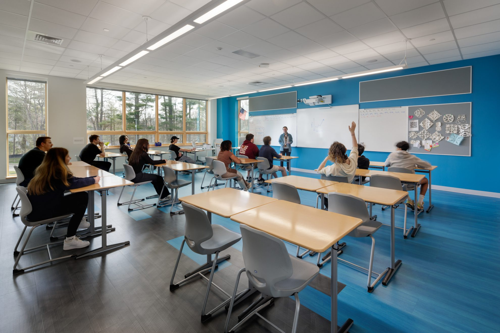

课程
在沙伦高中学生需要选六门课。 可是，学生也可能选八门课。 每天，学生需要上五门课。 一个星期，学生上学五次。 九年级课程都很容易，可是十二年级课生都很难。学校的数学课也很难。 我今年选八门课，因为我不喜欢有空。我选物理课，两门唱歌课，网上微积分课，统计课，英文文学课，中文课，和电脑实习。 明年，我上大学，所以我要选四门课。 明年，我想选微积分三，电脑课，最容易的写字课，和线性代数课。
在沙伦高中，你应该选最难的数学课，因为最好的老师喜欢较最难的数学课。 十二年级的时候，能要么选物理课，要么选化学课，要么选生物课。你不应该选化学课，因为化学老师不知道她在教什么。
要是你想毕业，需要一百零二学分。 我的学分够了，因为十一年级以后，我有一百学分半。我只需要多一学分半毕业。

学校有什么课程?
学校的英文系课程是：
英文课
文学课
哲学课
写文章课
学校的数学系课程
微积分课
统计课
十一年级数学课
十年级数学课
九年级数学课
英文课
文学课
哲学课
写文章课
学校的数学系课程
微积分课
统计课
十一年级数学课
十年级数学课
九年级数学课
学校的科学系的课程是
物理课
化学课
生物课
工程课
学校的电脑系课程是
电脑课
电脑工程师课
学校的历史系的课程
历史课
政治课
经济课
金融课
物理课
化学课
生物课
工程课
学校的电脑系课程是
电脑课
电脑工程师课
学校的历史系的课程
历史课
政治课
经济课
金融课
学校的世界语言系的课程是
中文课
希伯来语课
法语课
西班牙语课
中文课
希伯来语课
法语课
西班牙语课
音乐系有课程
拉小提琴课：艾昂会帮你学拉小提琴
唱歌课
学校的实习
电脑系的实习：学生会帮学生和老师用他们的电脑
图书馆实习：学生会帮忙图书馆员
拉小提琴课：艾昂会帮你学拉小提琴
唱歌课
学校的实习
电脑系的实习：学生会帮学生和老师用他们的电脑
图书馆实习：学生会帮忙图书馆员